Префектура Иватэ · Мориока · ремёсла
«Когэнся» в Мориоке: дом мингэй, который начался с книги Кэндзи Миядзавы
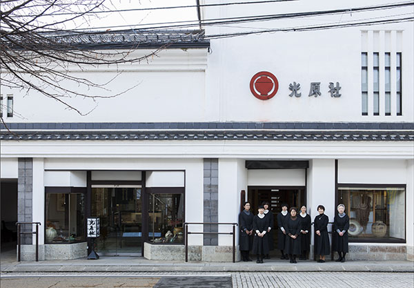
На улице Дзаймоку-тё в Мориоке стоит «Когэнся», лавка народных ремёсел, у истоков которой были сказки Кэндзи Миядзавы. За белым фасадом прячется двор с магазинами, кафе и мастерской: маленький квартал, который хочется обойти не спеша.
История
Издательство, которое назвал поэт
«Когэнся» начиналась как крошечное издательство. В 1924 году оно выпустило «Ресторан, где много заказов», сборник сказок Кэндзи Миядзавы, и название фирме придумал сам писатель. Поэтому для поклонников Миядзавы это место почти паломническое: на белых стенах в глубине двора крупно выведены его стихи.
Основатель «Когэнся» Сиро Оикава учился в Высшей школе сельского и лесного хозяйства Мориоки на курс младше Миядзавы. После учёбы он открыл в районе Татэсака дело: производил и продавал средства от вредителей и издавал учебники по земледелию. Там он снова встретил Миядзаву, который тогда преподавал в сельскохозяйственной школе Ханамаки, и получил от него стопку рукописей. Так и появилась первая книга писателя.
Деньги на неё собирали с трудом, а продать тираж не удалось: книга лежала на складе, и как издательский проект затея провалилась. Уважение Оикавы к Миядзаве от этого ничуть не уменьшилось.
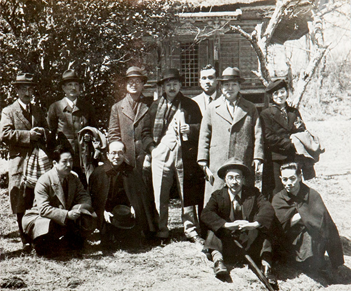
Выход Оикава нашёл в чугунных чайниках намбу-тэкки, которые возил в подарок, когда ездил по стране с книгами. Он пригласил в советники известного мастера и начал делать и продавать чайники. Чёрный лак, которым защищали чугун от ржавчины, привёл его к лаковой посуде, и так Оикава всерьёз занялся ремёслами, которые любил с юности. Тогда же знакомый скульптор, позже входивший в правление общества мингэй Иватэ, сказал ему: «Есть один интересный человек». Этим человеком оказался Мунэёси Янаги.
Салон
Двор, где собирались мастера
В 1937 году «Когэнся» переехала из Татэсаки на улицу Дзаймоку-тё, где она стояла и в 2017 году. С этого времени сюда заезжал Янаги, когда изучал ремёсла Тохоку и читал лекции, а за ним и другие крупные мастера: керамисты Сёдзи Хамада (1894–1978) и Кандзиро Каваи (1890–1966), красильщик Кэйсукэ Сэридзава (1895–1984), гравёр Сико Мунаката (1903–1975). Двор «Когэнся» стал их салоном. Вместе с ткачом, ведущим мастером домотканой шерсти, Оикава стал одним из тех, на ком держалось движение мингэй в префектуре, а в 1942 году помог открыть отделение Японского общества мингэй в Иватэ.
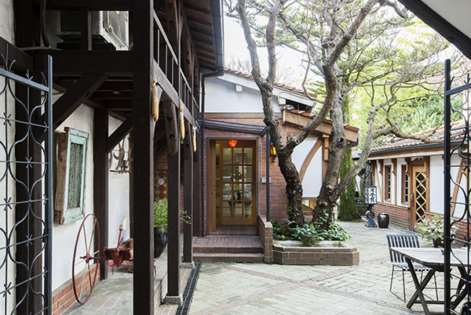
В 1965 году, следуя идеям Янаги и под руководством его соратников, «Когэнся» стала лавкой ремёсел со всей страны. Со следующего года на участке один за другим появлялись новые магазины, и постепенно сложился тот вид, который у неё в 2017 году. Логотип, вывески и многие мелочи во дворе сделаны руками друзей Оикавы, они соседствуют с вещами, связанными с Миядзавой. В архивной комнате хранятся работы великих мастеров и множество их писем Оикаве. По этим письмам видно, как он умел разглядеть суть мастера и дружить с ним, и в этом во многом причина того, что «Когэнся» стала примером для лавок мингэй не только в Тохоку, но и по всей Японии.
Обёрточную бумагу и бумажные ленты для подарков и в 2017 году печатали по рисункам художников мингэй, среди них Самиро Юноки (1922–2024) и Сумио Каваками (1895–1972).
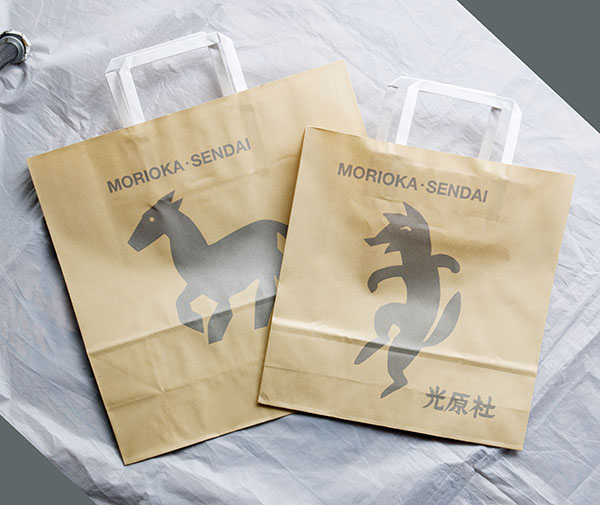
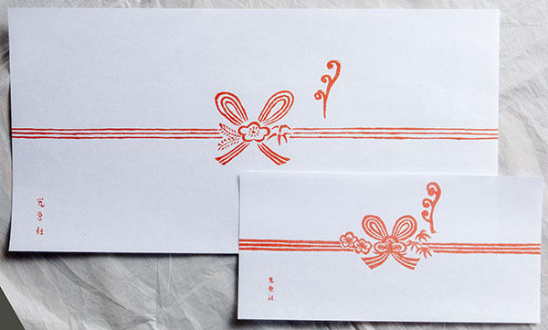
Квартал
Маленький город вокруг двора
Кроме главного магазина, во дворе стоят дома с самыми разными ролями, и всё вместе похоже на небольшой город. Когда даже простое кафе было редкостью, Оикава уже открыл своё. Сегодня такое назвали бы магазином образа жизни.
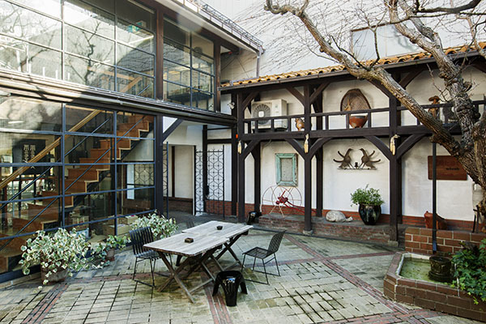
Вокруг двора стоят «Синкан» и «Кюкан», новый и старый магазины, где продают лаковую посуду собственной мастерской и керамику со всей Японии; «Эгэрэсу-кан», который служит гостиной; «Кампанэра» с ремёслами и одеждой со всего мира. Стоит шагнуть во двор, и чувствуешь мечту об «Ихатобу», идеальной стране, которую Миядзава и Оикава видели в родной Иватэ, и дух мингэй, перенятый у Янаги.
Перестраивать дом и двор Оикава начал сразу, как открыл лавку ремёсел. В 1972 году появилось кафе «Кохикан», чтобы гости, приехавшие издалека, могли спокойно посидеть. В 1973 году построили «Мадзиэру-кан», в 1974 году «Ихатобу-кан».
Интересы Оикавы росли: мингэй, одежда, мебель. Он думал даже о том, чтобы в «Кохикан» кормили, но эта мечта не сбылась. Идея магазина образа жизни, привычная сегодня, сложилась у него задолго до того, как появилось само слово.
Не бояться перемен, а получать от них удовольствие: Оикава умер в 1974 году в 79 лет, но его дело продолжают те, кто работает в «Когэнся». Сотрудники в аккуратной форме каждый день подметают двор до последнего уголка и встречают путешественников.
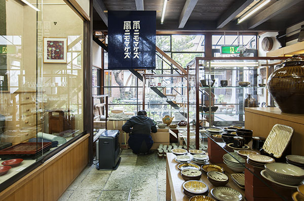
«Синкан» и «Кюкан»
Главные магазины выходят на улицу Дзаймоку-тё. В «Кюкане» лаковая посуда, бумага васи и ткани, окрашенные по трафарету. В «Синкане» в основном керамика со всей Японии и стекло с Окинавы. На втором этаже мебель мастерской «Мацумото мингэй кагу», скандинавская мебель, предметы интерьера из разных стран, домотканая шерсть и одежда.
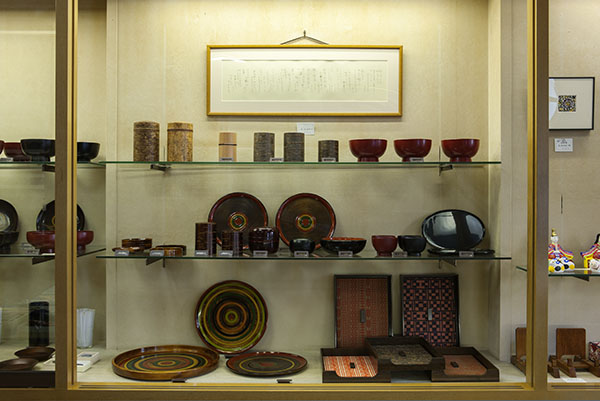
Кафе «Кохикан»
Кафе с классическим интерьером: мебель «Мацумото мингэй кагу», мексиканские стулья из свиной кожи, витражи. Здесь пьют тщательно сваренный ароматный кофе и едят фирменное печенье с грецким орехом. Посуда в кафе та же, что продаётся в магазине.
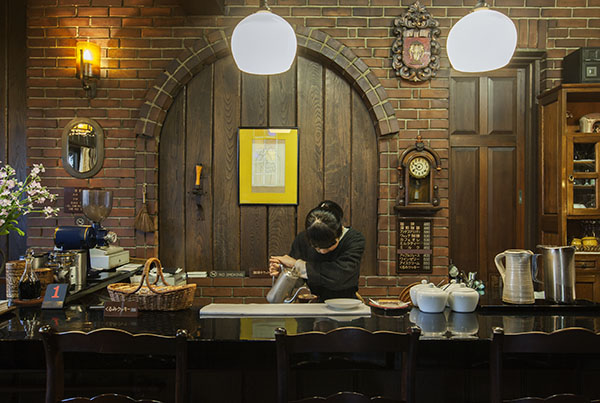
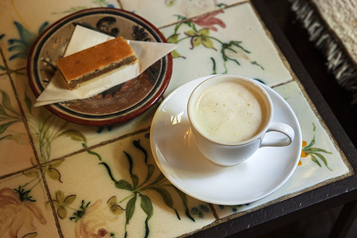
«Ихатобу-кан» и «Кампанэра»
В «Ихатобу-кане» несколько раз в год проходят выставки, и на время они сводят вместе тех, кто делает вещи, и тех, кто ими пользуется. «Кампанэра» это маленькая лавка, где продают ремёсла разных стран, украшения и одежду.
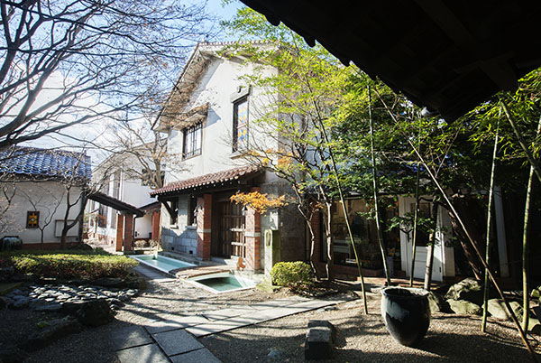
Архивная комната
Здесь выставлены работы и документы мастеров мингэй и письма к Оикаве. Если записаться заранее, посмотреть можно бесплатно. На втором этаже работает лаковая мастерская, где делают собственную посуду «Когэнся».
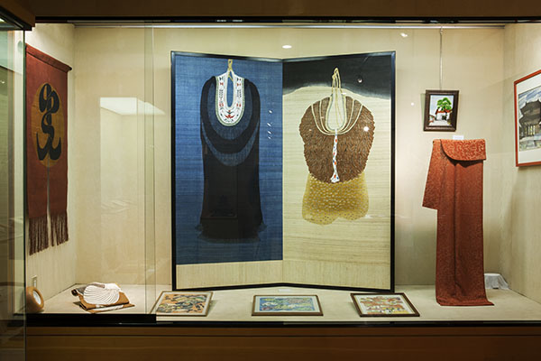
Взгляд
Как здесь выбирают вещи
Скандинавская мебель и азиатские ремёсла стоят в «Когэнся» рядом с японскими вещами мингэй, и ничто не выглядит лишним. Секрет в том, как их выбирают.
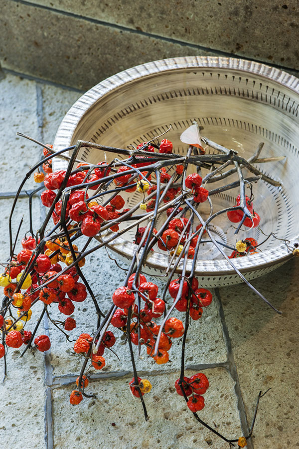
С самого начала здесь продавали посуду народных печей, мебель «Мацумото мингэй кагу» и домотканую шерсть. Около 1970 года под влиянием Сэридзавы, который сам собирал ремёсла со всего мира, появились вещи из Азии и Европы. Новый взгляд добавил внук Оикавы: он учился ремеслу торговли в Токио, вернулся с женой в Мориоку и вошёл в дело.
Одной из первых среди лавок мингэй «Когэнся» начала продавать посуду и столовые приборы Сори Янаги, дизайнера и сына Мунэёси. Позже к ним прибавились вещи из Индии и Африки. К 2017 году сюда добавились оловянные тарелки известного мастера и льняные вещи Fog Linen Work, а ещё «Когэнся» регулярно проводит выставки токийской лавки старых вещей «Фурудогу Саката», которую любил и Сэридзава.
Оикава выбирал вещи, не держась только за мингэй и не деля их по странам и жанрам. Он просто прямо смотрел на вещь и проверял чувство и характер её мастера. Пока эта основа крепка, взгляд не сбивается, сколько бы людей ни выбирали.
Вещи, которые продаются десятилетиями
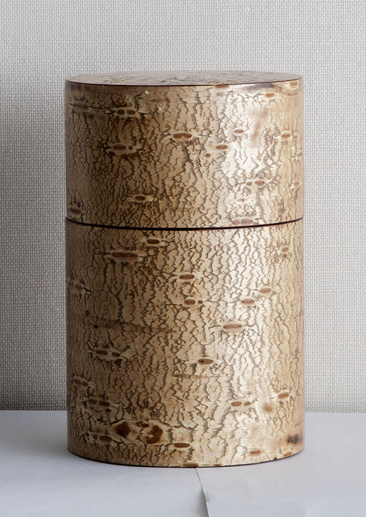
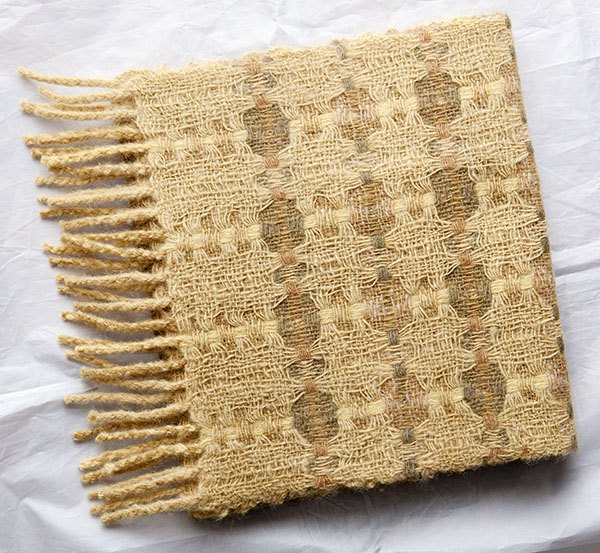
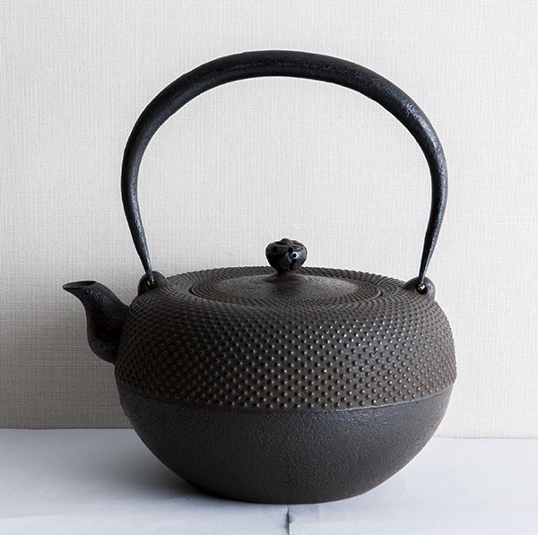
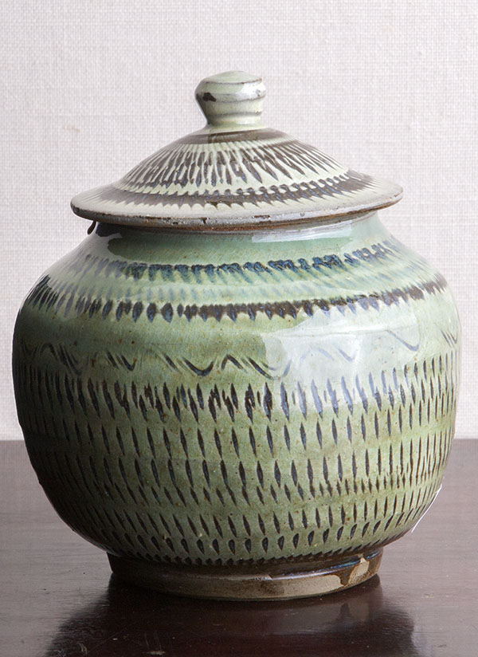
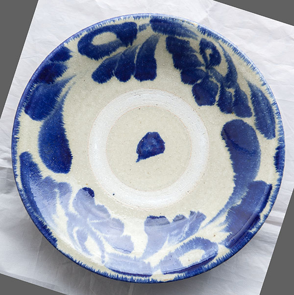
Новые вещи мингэй
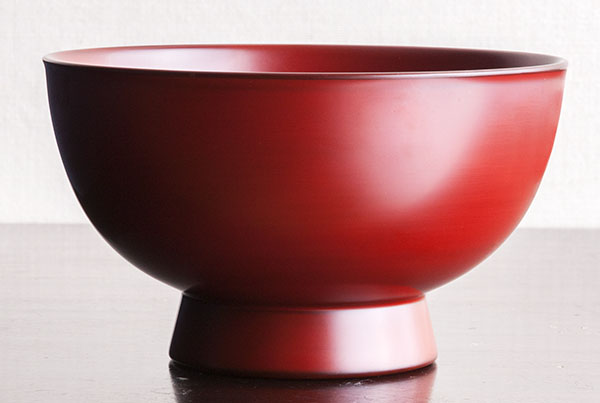
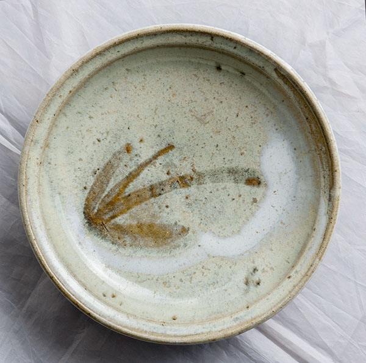
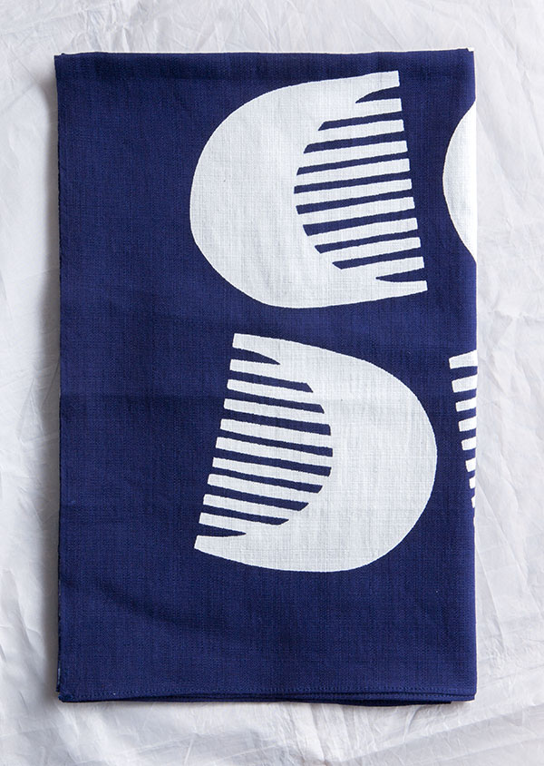
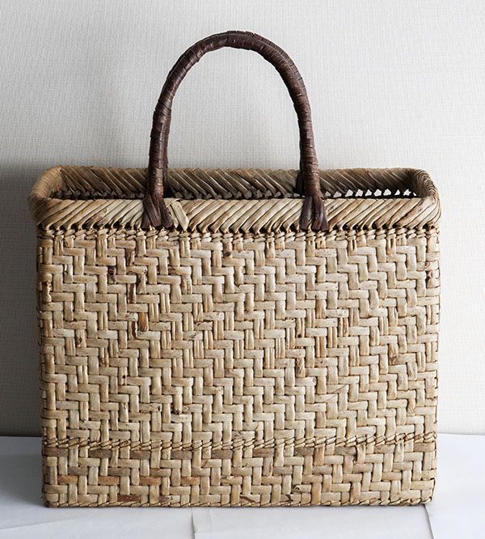
«Когэнся»
- Адрес
- префектура Иватэ, Мориока, Дзаймоку-тё, 2-18
- Телефон
- +81 19-622-2894
- Часы работы
- 10:00–18:00
- Выходные
- 15-е число каждого месяца
Фото: Сатоси Нагарэ.